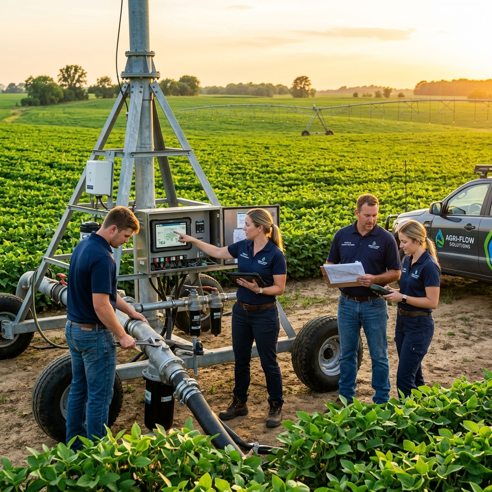

Discover Our Story
Empowering Indian Agriculture with World-Class Smart Micro-Irrigation Technology.

Who We Are
Chronic Industries is an ISO 9001:2015 certified manufacturer based in Pipodara, Surat (Gujarat). We specialize in high-quality Drip Line, HDPE Pipes, Butterfly Valves, Sprinklers, Filters and Irrigation Fittings that help farmers grow more with less water.
Our products carry ISI certification and the Make in India mark — a testament to our commitment to quality, reliability, and supporting Indian agriculture across every season.
Why Choose Us
All products meet BIS, ISI and international quality standards for durability and performance.
Save up to 50% water compared to traditional flood irrigation with our precision systems.
Documented 25-40% increase in crop yield across thousands of farms in our network.
We assist you in availing government subsidies, making irrigation affordable for every farmer.
Dedicated agronomists and engineers available for free on-site consultations and system design.
Comprehensive warranty coverage and responsive maintenance support across all regions.